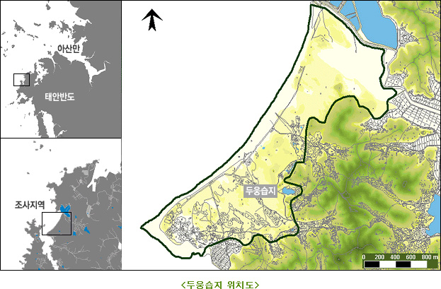

금강 이야기
※ 금강 이야기 개요
전북 장수군 신무산 발원하여 충북과 충남을 거쳐 강경에서부터 충남·전북의 도계를 이루면서 서해로 흘러드는 강.
- [위치] 전북 장수군 신무산, 충청남도, 충청북도, 금강하구언
- [면적] 역면적 9,810㎢
- [길이] 395.9km
길이395.9km, 유역면적 9,810㎢, 옥천 동쪽에서 보청천(報靑川), 조치원 남부에서 미호천(美湖川), 기타 초강(草江)ㆍ갑천(甲川)등 크고 작은 20개의 지류가 합류한다. 상류부에서는 감입곡류하면서 무주에서 무주구천동, 영동에서 양산팔경(陽山八景)등 계곡미를 이루며, 하류의 부여에서는 백마강이라는 별칭으로 불리면서 부소산(扶藻山)을 침식하여 백제 멸망사에 일화를 남긴 낙화암을 만들었다. 강경부근에서 하구까지의 구간은 익곡(溺谷)을 이루어 군산ㆍ강경 등 하항이 발달하였으며, 종래 부강(芙江)까지 작은 배가 소항하여 내륙수로로 크게 이용되어 왔으나 호남선의 개통, 자동차교통의 발달로 그 기능을 상실하였다.
상류부에 대전분지ㆍ청주분지, 중류부에 호서평야(湖西平野), 하류부에 전북평야가 전개되어 전국 유수의 쌀생산지대를 이룬다. 그와 같은 해상교통의 발달과 농업 생산으로 일찍이 연안에 공주ㆍ부여ㆍ강경 등 고도와 옛 상업도시가 발달하였다. 1980년 신탄진 부근에 대청 다목적댐이 건설되었다. 기후는 한반도 중앙에 위치하여 온대 북한계에 가까워 유역의 평균기온은 11.0~12.5℃, 연간 수량은 1,100~1,300mm이다.
※ 두웅습지 보호지역
두웅습지는 신두리해안사구의 배후습지로서 습지 및 습지에 서식하는 야생동 · 식물을 보호하기 위하여 2002년 11월 1일 습지보호지역으로 지정되었다.
<두웅습지와 주변의 동 · 식물>
- 동물 : 멸종위기종인 금개구리, 맹꽁이, 표범장지뱀 등
- 식물 : 사구식물인 갯그령, 통보리사초군락, 수생식물인 붕어마름ㆍ수련 등
※ 습지보호지역의 지정
두웅습지는 신두리 해안사구의 남쪽에 위치하는 사구의 배후습지로서 습지의 보호 및 습지에 서식하는 야생동·식물을 보호하기 위하여 환경부가 2002년 11월 1일 습지보호지역으로 지정하였다.
<두웅습지 습지보호지역 지정 현황>
- 지정일 : 2002.11.1
- 지정목적 : 신두리해안사구의 배후습지 및 희귀야생동·식물의 서식지 보호
- 위치 : 충남 태안군 원북면 신두리 일원
- 면적 : 64,595㎡
- 지정근거 :「습지보전법」제8조
※ 두웅습지의 생태학적 중요성
두웅습지와 같은 ‘사구배후습지’의 물은 배후지로부터 공급되는 것뿐만 아니라 사구지대 하부의 거대한 담수 탱크와 연계되어 있어 수위가 낮아질 경우 사구지대로부터 역으로 보충되어 물이 거의 마르지 않는다. 따라서, 두웅습지는 이곳을 터전으로 하는 습지 동·식물에게 안정적인 수분 공급원인 동시에 서식지이고, 금개구리나 맹꽁이 같은 중요한 양서류와 수서 곤충류의 산란지이다.
※ 두웅습지의 자연생태
식물상
- 두웅습지와 주변지역의 식물상은 집수구역에 127종, 그 주변 사구에 147종, 습지식물 18종 분포
- 침수식물인 붕어마름, 부엽식물인 애기마름, 수련과 정수식물인 겨풀, 매자기, 큰고랭이, 갈대 군락이 분포
- 사구식생은 갯그령, 통보리사초, 좀보리사초, 해당화, 갯메꽃, 띠, 혼합초지 군락이 작은 규모로 분포
동물상
- 어류상 : 5과 9종이 분포하고 있으며, 기름종개과와 망둑어과 어류가 각 3종씩으로써 가장 많이 출현하였고, 한반도 어류의 전형적인 분포상과는 큰 차이를 보임
- 조류 : 두웅습지 주위에서 39종 서식
- 양서·파충류 : 조사대상지역에서 총 8과 10속 14종이 서식하고 있으며, 멸종위기야생 동·식물Ⅱ급인 금개구리, 맹꽁이, 표범장지뱀 등 3종 서식
- 육상곤충상 : 총 11목 52과 110종이 신두리지역에서 서식
- 저서성 대형무척추동물상 : 두웅습지 및 그 일대의 사구배후습지에서 총 10목 24과 49종 서식